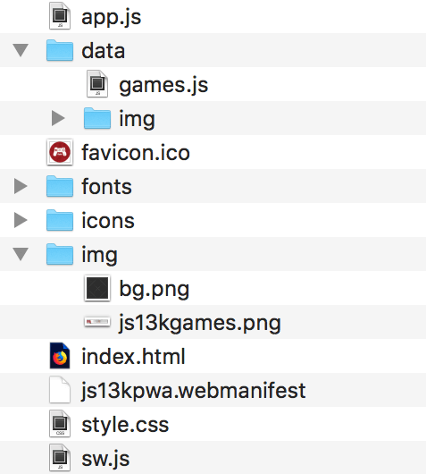

PWAs (Progressive Web App) are web apps developed using a number of specific technologies and standard patterns to allow them to take advantage of both web and native app features. For example, web apps are more discoverable — it's a lot easier and faster to visit a website than install an application, and you can also share web apps via a link. On the other hand, native apps are better integrated with the operating system and therefore offer a more seamless experience for the users. You can install a native app so that it works offline, and users love tapping their homescreen icons to easily access their favorite apps, rather than navigating to it using a browser. PWAs give us the ability to create web apps that can enjoy these same advantages. It's not a brand new concept — such ideas have been revisited many times on the web platform with various approaches in the past. Progressive Enhancement and responsive design already allow us to build mobile friendly websites. Working offline and installing apps was possible in the Firefox OS ecosystem a few years ago. PWAs, however, provide all this and more, without getting rid of any of the existing features that make the web great.
As we hinted at above, PWAs are not created with a single technology. They represent a new philosophy for building web apps, involving some specific patterns, APIs, and other features. It's not that obvious if a web app is a PWA or not from first glance. An app could be considered a PWA when it meets certain requirements, or implements a set of given features: works offline, is installable, is easy to synchronize, can send push notifications, etc. In addition, there are tools to measure the completeness of an app in percentages. (Lighthouse is currently the most popular one.) By implementing various technological advantages, we can make an app more progressive, thus ending up with a higher Lighthouse score. But this is only a rough indicator. There are some key principles a web app should try to observe to be identified as a PWA. It should be:
- Discoverable, so the contents can be found through search engines.
- Installable, so it's available on the device's home screen.
- Linkable, so you can share it by simply sending a URL.
- Network independent, so it works offline or with a poor network connection.
- Progressive, so it's still usable on a basic level on older browsers, but fully-functional on the latest ones.
- Re-engageable, so it's able to send notifications whenever there's new content available.
- Responsive, so it's usable on any device with a screen and a browser — mobile phones, tablets, laptops, TVs, fridges, etc.
- Safe, so the connection between you and the app is secured against any third parties trying to get access to your sensitive data.
As mentioned before, PWAs don't depend on a single API, but rather using various technologies to achieve the goal of delivering the best web experience possible. The key ingredient required for PWAs is service worker support. Thankfully service workers are now supported on all major browsers on desktop and mobile. Other features such as Web App Manifest, Push, Notifications, and Add to Home Screen functionality have wide support too. Currently, Safari has limited support for Web App Manifest and Add to Home Screen and no support for web push notifications. However, other major browsers support all these features. Some of these APIs are experimental, with the documentation still in draft, but seeing success stories like those of Flipkart and AliExpress should convince you to try and implement some of the PWA features in your web app already. Above all you should follow the progressive enhancement rule — use the technologies that provide such enhancements only where they are supported, but still offer the basic functionality of your app if it isn't. This way everybody will be able to use it, but those with modern browsers will benefit from PWA features even more.
Absolutely! With a relatively small amount of effort required to implement the core PWA features, the benefits are huge. For example:
- A decrease in loading times after the app has been installed, thanks to caching with Service Workers, along with saving precious bandwidth and time. PWAs have near-instantaneous loading (from the second visit).
- The ability to update only the content that has changed when an app update is available. In contrast, with a native app, even the slightest modification can force the user to download the entire application again.
- A look and feel that is more integrated with the native platform — app icons on the homescreen, apps that run fullscreen, etc.
- Re-engaging with users via system notifications and push messages, leading to more engaged users and better conversion rates.
There are two main, different approaches to rendering a website — on the server or on the client. They both have their advantages and disadvantages, and you can mix the two approaches to some degree.
- Server-side rendering (SSR) means a website is rendered on the server, so it offers quicker first load, but navigating between pages requires downloading new HTML content. It works great across browsers, but it suffers in terms of time navigating between pages and therefore general perceived performance — loading a page requires a new round trip to the server.
- Client-side rendering (CSR) allows the website to be updated in the browser almost instantly when navigating to different pages, but requires more of an initial download hit and extra rendering on the client at the beginning. The website is slower on an initial visit, but can be faster to navigate.
The App shell concept is concerned with loading a minimal user interface as soon as possible and then caching it so it is available offline for subsequent visits before then loading all the contents of the app. That way, the next time someone visits the app from the device, the UI loads from the cache immediately and any new content is requested from the server (if it isn’t available in the cache already). This structure is fast, and also feels fast as the user sees "something" instantly, instead of a loading spinner or a blank page. It also allows the website to be accessible offline if the network connection is not available. We can control what is requested from the server and what is retrieved from the cache with a service worker, which will be explained in detail in the next article — for now let's focus on the structure itself. This architecture allows a website to benefit the most from all the PWA features — it caches the app shell and manages the dynamic content in a way that greatly improves the performance. In addition to the basic shell, you can add other features such as add to home screen or push notifications, safe in the knowledge that the app will still work OK if they are not supported by the user's browser — this is the beauty of progressive enhancement. The website feels like a native app with instant interaction and solid performance while keeping all the benefits of the web. It's important to remember the PWA advantages and keep them in mind when designing the application. The app shell approach allows websites to be:
- Linkable: Even though it behaves like a native app, it is still a website — you can click on the links within the page and send a URL to someone if you want to share it.
- Progressive: Start with the "good, old basic website” and progressively add new features while remembering to detect if they are available in the browser and gracefully handle any errors that crop up if support is not available. For example, an offline mode with the help of service workers is just an extra trait that makes the website experience better, but it's still perfectly usable without it.
- Responsive: Responsive web design also applies to progressive web apps, as both are mainly for mobile devices. There are so many varied devices with browsers — it's important to prepare your website so it works on different screen sizes, viewports or pixel densities, using technologies like viewport meta tag, CSS media queries, Flexbox, and CSS Grid.
An entirely different approach to server- or client-side Rendering can be achieved with the Streams API. With a little help from service workers, streams can greatly improve the way we parse content. The app shell model requires all the resources to be available before the website can start rendering. It's different with HTML, as the browser is actually streaming the data already and you can see when the elements are loaded and rendered on the website. To have the JavaScript "operational", however, it has to be downloaded in its entirety. The Streams API allows developers to have direct access to data streaming from the server — if you want to perform an operation on the data (for example, adding a filter to a video), you no longer need to wait for all of it to be downloaded and converted to a blob (or whatever) — you can start right away. It provides fine-grained control — the stream can be started, chained with another stream, cancelled, checked for errors, and more. In theory, streaming is a better model, but it's also more complex, and at the time of writing (March 2018) the Streams API is still a work-in-progress and not yet fully available in any of the major browsers. When it is available, it will be the fastest way of serving the content — the benefits are going to be huge in terms of performance. For working examples and more information, see the Streams API documentation.
The js13kPWA website structure is quite simple: it consists of a single HTML file (index.html) with basic CSS styling (style.css), and a few images, scripts, and fonts. The folder structure looks like this: 
The HTML
From the HTML point of view, the app shell is everything outside the content section:
<!DOCTYPE html>
<html lang="en">
<head>
<meta charset="utf-8">
<title>js13kGames A-Frame entries</title>
<meta name="description" content="A list of A-Frame entries submitted to the js13kGames 2017 competition, used as an example for the MDN articles about Progressive Web Apps.">
<meta name="author" content="end3r">
<meta name="theme-color" content="#B12A34">
<meta name="viewport" content="width=device-width, initial-scale=1">
<meta property="og:image" content="icons/icon-512.png">
<link rel="shortcut icon" href="favicon.ico">
<link rel="stylesheet" href="style.css">
<link rel="manifest" href="js13kpwa.webmanifest">
<script src="data/games.js" defer></script>
<script src="app.js" defer></script>
</head>
<body>
<header>
<p><a class="logo" href="http://js13kgames.com"><img src="img/js13kgames.png" alt="js13kGames"></a></p>
</header>
<main>
<h1>js13kGames A-Frame entries</h1>
<p class="description">List of games submitted to the <a href="http://js13kgames.com/aframe">A-Frame category</a> in the <a href="http://2017.js13kgames.com">js13kGames 2017</a> competition. You can <a href="https://github.com/mdn/pwa-examples/blob/master/js13kpwa">fork js13kPWA on GitHub</a> to check its source code.</p>
<button id="notifications">Request dummy notifications</button>
<section id="content">
// Content inserted in here
</section>
</main>
<footer>
<p>© js13kGames 2012-2018, created and maintained by <a href="http://end3r.com">Andrzej Mazur</a> from <a href="http://enclavegames.com">Enclave Games</a>.</p>
</footer>
</body>
</html>
The <head> section contains some basic info like title, description and links to CSS, web
manifest, games content JS file, and app.js — that's where our JavaScript application is initialized. The
<body> is split into the <header> (containing linked image),
<main> page (with title, description and place for a content), and
<footer> (copy and links).
The app's only job is to list all the A-Frame entries from the js13kGames 2017 competition. As you can see it
is a very ordinary, one page website — the point is to have something simple so we can focus on the
implementation of the actual PWA features.
The CSS
The CSS is also as plain as possible: it uses @font-face to load and use a custom font, and it applies some simple styling of the HTML elements. The overall approach is to have the design look good on both mobile (with a responsive web design approach) and desktop devices.
The main app JavaScript
The app.js file does a few things we will look into closely in the next articles. First of all it generates the content based on this template:
var template = "<article>\n\
<img src='data/img/SLUG.jpg' alt='NAME'>\n\
<h3>#POS. NAME</h3>\n\
<ul>\n\
<li><span>Author:</span> <strong>AUTHOR</strong></li>\n\
<li><span>Twitter:</span> <a href='https://twitter.com/TWITTER'>@TWITTER</a></li>\n\
<li><span>Website:</span> <a href='http://WEBSITE/'>WEBSITE</a></li>\n\
<li><span>GitHub:</span> <a href='https://GITHUB'>GITHUB</a></li>\n\
<li><span>More:</span> <a href='http://js13kgames.com/entries/SLUG'>js13kgames.com/entries/SLUG</a></li>\n\
</ul>\n\
</article>";
var content = '';
for(var i=0; i<games.length; i++) {
var entry = template.replace(/POS/g,(i+1))
.replace(/SLUG/g,games[i].slug)
.replace(/NAME/g,games[i].name)
.replace(/AUTHOR/g,games[i].author)
.replace(/TWITTER/g,games[i].twitter)
.replace(/WEBSITE/g,games[i].website)
.replace(/GITHUB/g,games[i].github);
entry = entry.replace('<a href=\'http:///\'></a>','-');
content += entry;
};
document.getElementById('content').innerHTML = content;